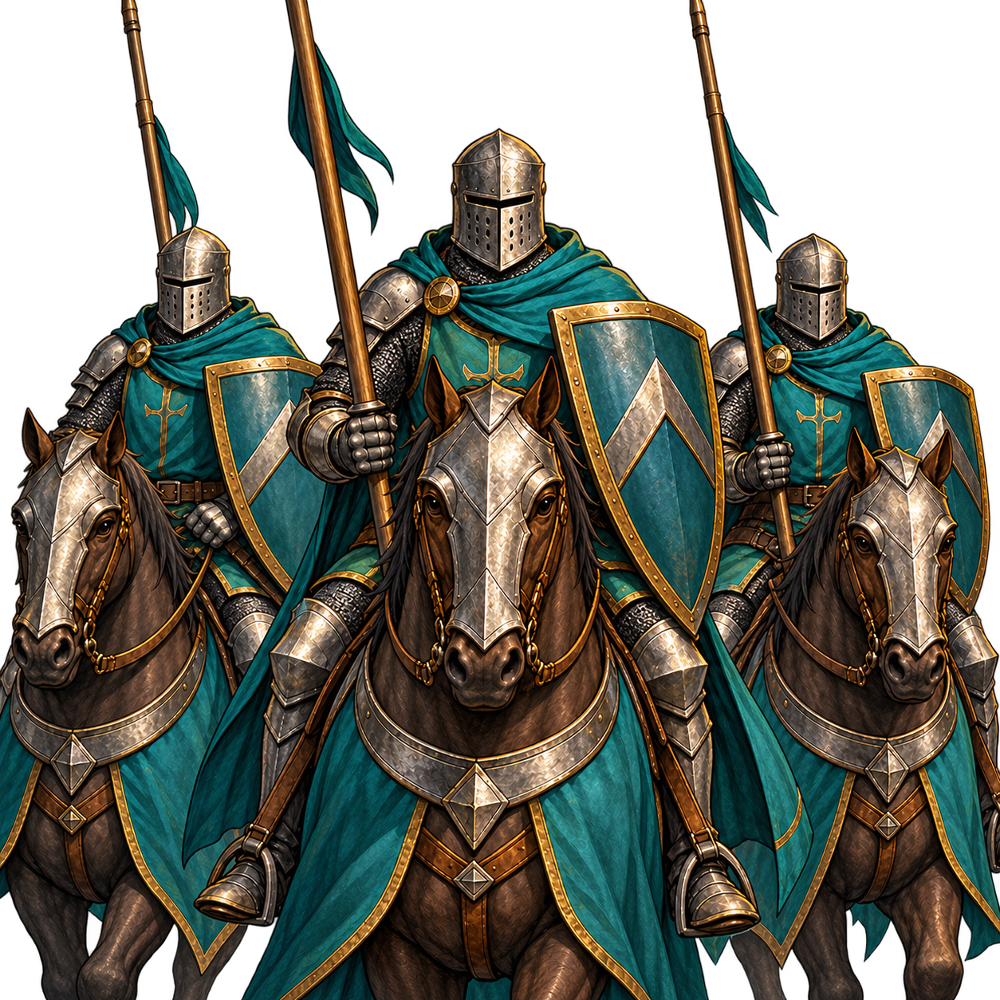

Préparer ses troupes et programmer leurs ordres dans un combat tactique.

Les nouveaux combats utilisent un plateau tactique. Les anciennes batailles sauvegardées peuvent conserver le système de duels.
Préparez les positions de votre armée, puis programmez les ordres de vos cartes. Le commandement du héros détermine le budget d’ordres ; l’autorité limite la composition de l’armée.
Les déplacements, attaques, défenses, ralliements et charges sont résolus par le serveur. Le terrain, les capacités et l’état des soldats influencent le résultat. Consultez le rapport après la bataille.
Prévu, non encore disponible : le combat à distance doit ouvrir la bataille sans déplacer le héros réel. Le fantôme astral du Mage combattra seul, infligera des dégâts physiques et réduira le moral adverse. Sa destruction terminera la projection sans blesser le Mage réel. En embuscade, seuls les cavaliers légers et archers montés spécialisés pourront se déployer ; les archers donneront accès à une Volée de flèches et le défenseur ne jouera pas le premier tour. Des sorts de carte pour le Mage et un Tir de précision pour l’Éclaireur sont envisagés. Aucune mana n’est prévue : les pouvoirs utiliseront un cooldown depuis la carte et un coût en Commandement dans une bataille normale, pris sur le budget du tour. Les effets précis, portées, durées de recharge, coûts chiffrés et articulation entre carte et bataille restent à définir ; les règles actuellement disponibles ne sont pas modifiées.
L’écran tactique privilégie la carte : sa hauteur reste stable lorsque les techniques ou la main s’ouvrent. La validation ✓ et le budget d’ordres sont en haut, séparés de la poignée des réserves ; valider sans ordre fait tenir les positions et passe le tour. Le bouton i ouvre une notice. Les panneaux de résolution et les textes des ordres sont remplacés par les numéros et flèches sur les cases. Les petits socles dégagent les sprites. Les PV perdus, nouveaux blessés et morts apparaissent au-dessus des unités, respectivement en blanc, orange et rouge, à partir des événements officiels du serveur. L’ancien libellé de terrain global est retiré pour éviter une contradiction avec les cases visibles ; la météo reste indiquée. Ce changement de présentation ne modifie pas les règles de combat ni de santé.
Les terrains du plateau emploient désormais un dessin anime/JRPG en cel-shading, avec des formes larges et moins de petits détails : plaine vert clair, forêt vert profond, collines arrondies, rochers gris bleuté et eau turquoise. Les structures restent sur une couche séparée. Ce changement graphique rend les cases plus distinctes sans modifier les règles, les dégâts, les déplacements ni la carte officielle du serveur.